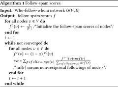
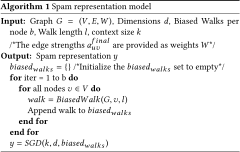

DOI: https://doi.org/10.1145/3184558.3186930
WWW '18: Proceedings of The Web Conference 2018, Lyon,
France, April 2018
In this paper, we propose a semi-supervised framework Spam2Vec to identify spammers in Twitter. This algorithmic framework learns the spam representations of the node in the network by leveraging biased random walks. Our spammer detection method yields an AUC of 0.54 with precision@100 as 0.12 and performs significantly better with 7.77% increase in AUC and a 2.4 times improvement on precision over the best performing baseline.
CCS Concepts: • Information systems → Data mining; Social networks;
ACM Reference
Format:
Suman Kalyan Maity, Santosh K C, and Arjun Mukherjee.
2018. Spam2Vec: Learning Biased Embeddings for Spam
Detection in Twitter. In WWW '18 Companion: The 2018
Web Conference Companion, April 23–27, 2018 (WWW
’18 Companion), Lyon, France. ACM, New York, NY,
USA 3 Pages. https://doi.org/10.1145/3184558.3186930
Social spammers are sophisticated and adaptable. Reflexive reciprocity makes it easier for social spammers to establish social influence and pretend to be normal users by accumulating a large number of friends and thereby easily bypass the spam detection systems. In this paper, we present Spam2Vec, a framework to collectively use both content and network information for social spammer detection. Spam2Vec learns a biased spam embeddings in the network by leveraging biased random walks. We first calculate follow-spam scores of the nodes in the network and try to bias the random walks with follow-spam scores of the nodes together with spam related features of the nodes. The biasing methodology maximizes the likelihood of obtaining spammer nodes in local few hop neighborhood instead of just concentrating on the immediate neighbor.
In Twitter, there are limited attempts been made to tackle the spam detection problem [1, 3, 6, 10, 12]. Lee et al. [6] leveraged profile-based features and deployed social honeypots to detect new social spammers. Ghosh et al. [3] studied link farming in Twitter. Zhu et al. [12] propose a Supervised Matrix Factorization method with Social Regularization for spammer detection.
We use the Twitter dataset collected by Yang et al. [11] consisting of posts from 17 million users from June 2009 to December 2009. We extracted the follower-following topology of Twitter from [5]. We further prune the network and we are left with 4,405,698 users and separately crawled the status of users to identify if they were suspended or not. In total, we have 100,758 spammer accounts.
Our entire framework is composed of 3 components: a) Follow-spam, b) Biasing in the network, c) Learning Spam Representation in the network.
One of the prominent ways of spamming in Twitter is follow-spam where a Twitter user follows large number of unknown other users hoping that these pretend-friends will follow him back in exchange. In this module, we design a pagerank-like model inspired by [3] to rank the nodes in the who-follows-whom network based on their spamicity (see Algorithm 1).

We want to combine the follow-spam scores and also consider the spammer's properties into a single framework that will at the same time consider rich node and edge features as well as the structure of the network. From a given source node s and set of spammer nodes (S) in the network, we aim to bias the random walk originating from s (irrespective of whether it is a spammer node or not) so that it visits other spammer nodes more often than the non-spammer nodes (H) in the network. For edge (u, v) in the network, we compute the edge strength auv = ψw (ϕuv ) where ϕuv denotes the corresponding feature vector that describes the nodes u, v and their interaction. Function ψw parameterized by w takes the edge feature vector ϕuv as input and computes the corresponding edge strength auv which models the biased random walk transition probability. Therefore, we need to set the parameters w of function ψw (ϕuv ) so that it will assign edge weights auv in such a way that a random walker will more likely visit spammer nodes S than non-spammer nodes H. Towards this objective, we formulate the optimization problem to find the optimal set of parameters w of edge-weight objective function ψw (ϕuv ) as follows:
Note that $\psi _{u,v}^{OPT}$ = ϕuv .wOPT .(fu + fv ) γ where fu and fv are the follow-spam scores of node u and v respectively and wOPT is the optimal w vector. We further bias the random walk with neighborhood spam. The idea behind this is that when a walker lands up on a node, he will choose a node that increases the likelihood of finding a spammer in his local neighborhood.
We now want to learn the spam representations (network embeddings) of the nodes in the network. For each node u in the network G = (V, E), we define a proximity or neighborhood N(u) which can be obtained by simulating a biased random walk (defined above) on the network starting at node u. We optimize the following objective function that predicts which nodes belong to the neighborhood N(u) based on the learned node attributes y, by adopting the Skip-gram architecture [4, 7, 9].
We also make the assumption that a source node and neighborhood node have a symmetric effect over each other in representation space. So, we have
Since the per-node function ∑ v ∈ V exp (y(v).y(u)) is computationally expensive, we approximate it using negative sampling [8]. We then optimize the objective function mentioned in Eq.2 using stochastic gradient descent over the model parameters. The detailed methodology is presented as Algorithm 2.

We use the node representations learnt earlier as features for spammer detection task. We learn a SGD regressor giving spammer nodes and non-spammer nodes two distinct values and then rank the nodes in test set according to the regression values. We evaluate our model with several baseline models to see how they are performing against various evaluation metrics.
In fig 1, we present the cumulative distribution function for presence of spam nodes in the rank percentile of nodes. We can observe that Spam2Vec performs best followed by node2vec. We also calculated area under the above curve (see table 1). Our model performs significantly better both in terms of Area under the CDF curve as well as precision@n (n=100). Spam2Vec yields an AUC of 0.541 with precision@100 as 0.12 which outperforms the best performing baseline model (node2vec) by 7.77% and 2.4 times increase in AUC and precision respectively. For other values of n also, Spam2Vec performs consistently and better than the other baseline models.
We propose a network-cum-content based spam-represented embedding learning framework Spam2Vec. We boost our spam representation learning of the node in the network by leveraging biased random walks. We compare our method Spam2Vec with already existing baselines. Spam2Vec yields an AUC of 0.54 with precision@100 as 0.12 and performs significantly better with 7.77% increase in AUC and a 2.4 times improvement on precision over the best performing baseline.
This research work is supported in part by the National Science Foundation under grant no. 1527364.
This paper is published under the Creative Commons Attribution 4.0 International (CC-BY 4.0) license. Authors reserve their rights to disseminate the work on their personal and corporate Web sites with the appropriate attribution.
WWW '18, April 23-27, 2018, Lyon, France
© 2018; IW3C2 (International World Wide Web Conference
Committee), published under Creative Commons CC-BY 4.0
License. ACM ISBN 978-1-4503-5640-4/18/04.
DOI: https://doi.org/10.1145/3184558.3186930